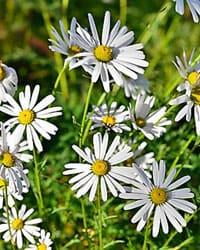

자연관
지형과 지질
독도는 화산 활동으로 형성된 화산섬으로, 용암과 화산암으로 이루어져 있다.두 개의 주요 섬, 동도와 서도, 그리고 89개의 작은 바위섬으로 구성되어 있다. 독도의 지형은 험준하며 해안선은 절벽과 바위로 둘러싸여 있다.

생태계
독도에는 약 50여 종의 식물이 자라고 있으며, 그 중 일부는 독도 특유의 환경에 적응한 식물들이다. 독도에 자생하는 주요 식물로는 동도나무, 독도사초, 울릉국화 등이 있다.
독도 주변 해역은 다양한 해양 생물의 서식지다. 해양 생물로는 조개류, 갑각류, 어류 등이 있으며, 특히 독도 주변 바다는 오징어, 대구, 고등어 등의 어종이 풍부하다. 육지에서는 독도쥐, 바다새(가마우지, 괭이갈매기 등)와 같은 동물들이 서식하고 있다.